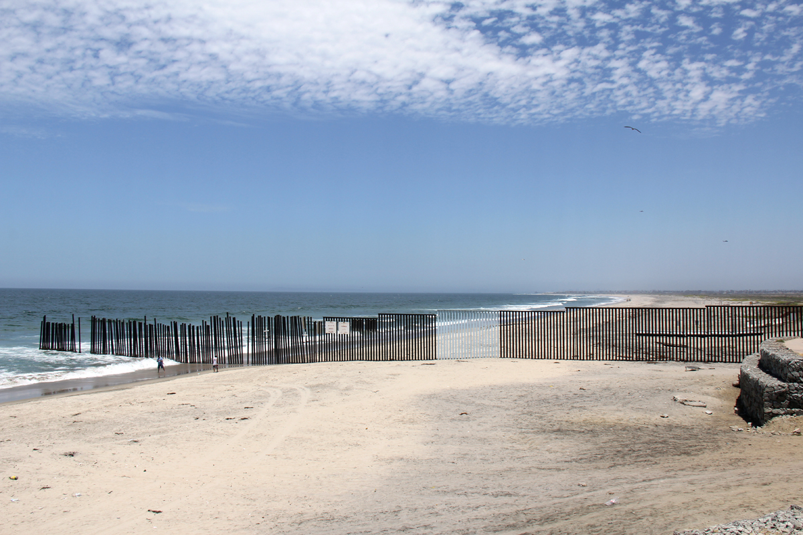

Obiamaka is a second year student in the Master of City Planning program at DUSP! My viszualization is a piece called, Good Luck With That Wall. It is a video edit of 200,000 images stitched together illustrating the geography of the U.S. Mexico border. The film visualization and the accompanying article can be found here.
